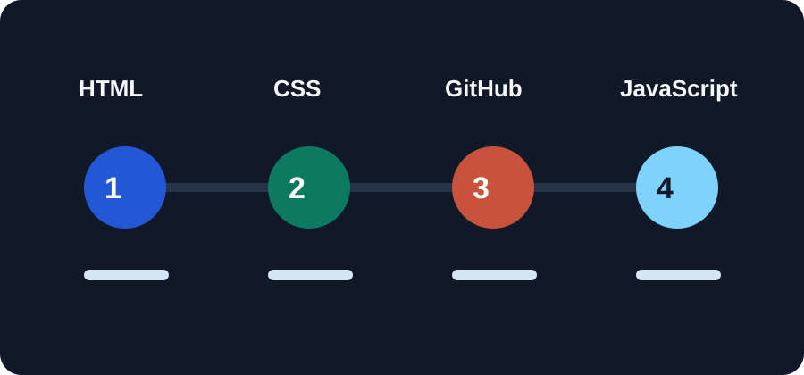

HTML
Writing clean structure, sections, navigation, links, and portfolio content.
Learning stack
KapriTech grows by building first, improving after, and keeping the learning visible.

Writing clean structure, sections, navigation, links, and portfolio content.
Building layouts, responsive design, colors, spacing, buttons, and readable pages.
Saving progress, publishing work, and building a public developer record.
Adding interaction, mobile navigation behavior, and better product experiences.
Growth plan
Build and polish this portfolio until it feels clear, trustworthy, and personal.
Publish projects consistently and write short notes about what each project teaches.
Learn JavaScript deeply enough to create interactive tools and real product features.
Grow KapriTech step by step into a useful technology company.